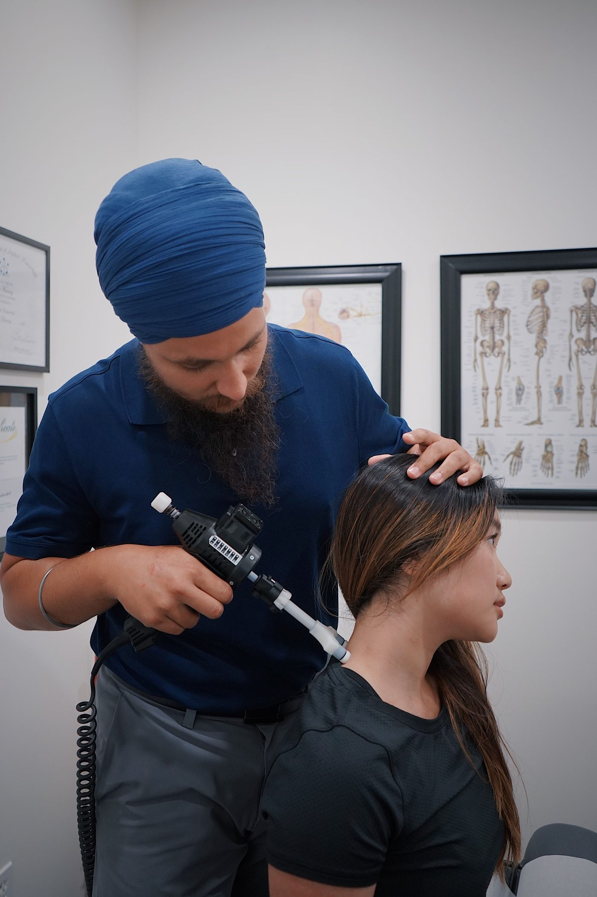

Visit Pittman Chiropractic
Chiropractic care in Spokane, for backs, necks, and the dedicated athlete.
Address: 405 E Hartson Ave, Spokane, WA 99202
Hours: Monday, Wednesday, and Friday 8:30 AM to 5:00 PM. Tuesday and Thursday 8:30 AM to 12:00 PM.
Phone: (509) 456-0347
Gallery


All gallery photos are stock photos, labeled as such. They show chiropractic care, not this clinic's patients or staff.
Contact
Pittman Chiropractic serves Spokane, WA. Questions? Call (509) 456-0347.